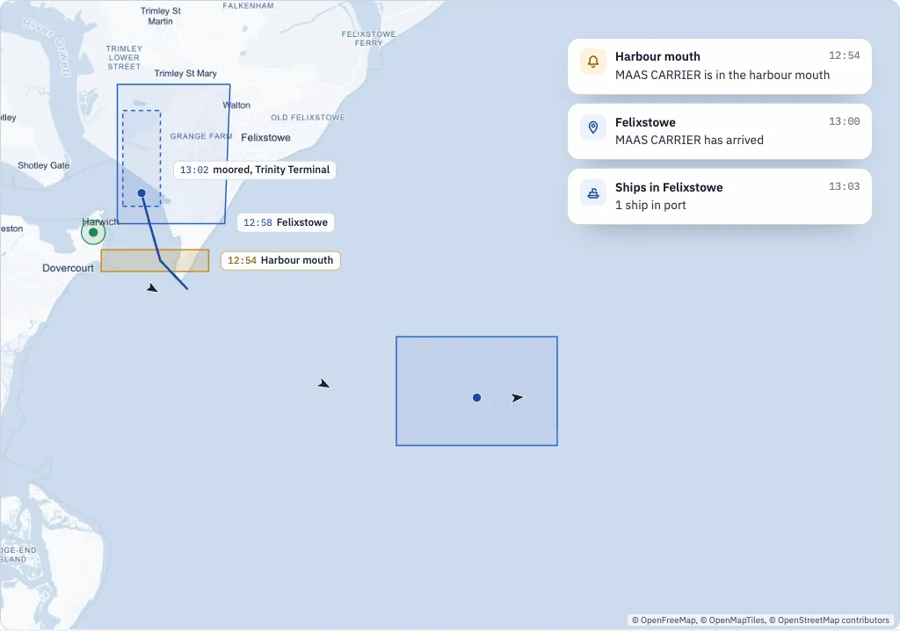
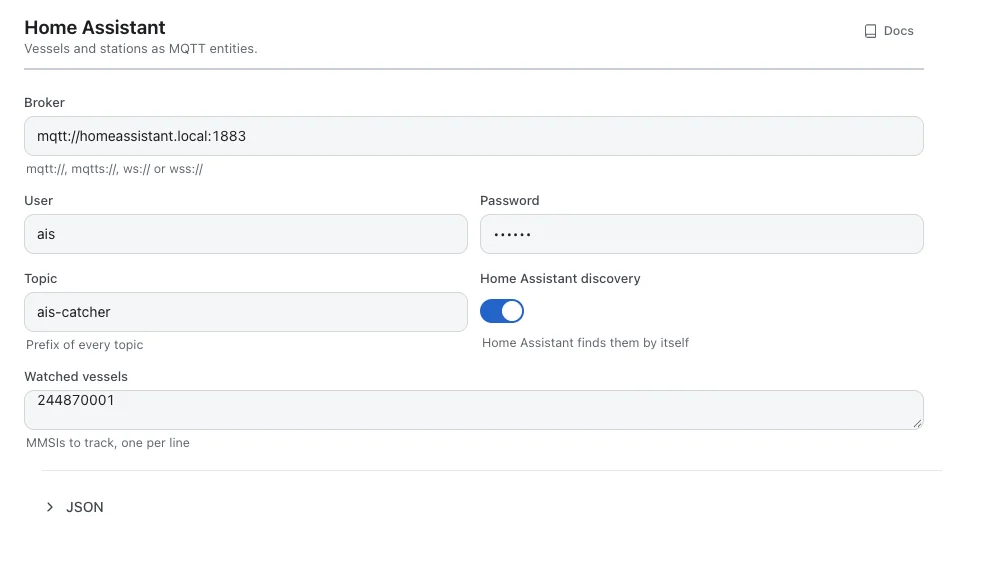
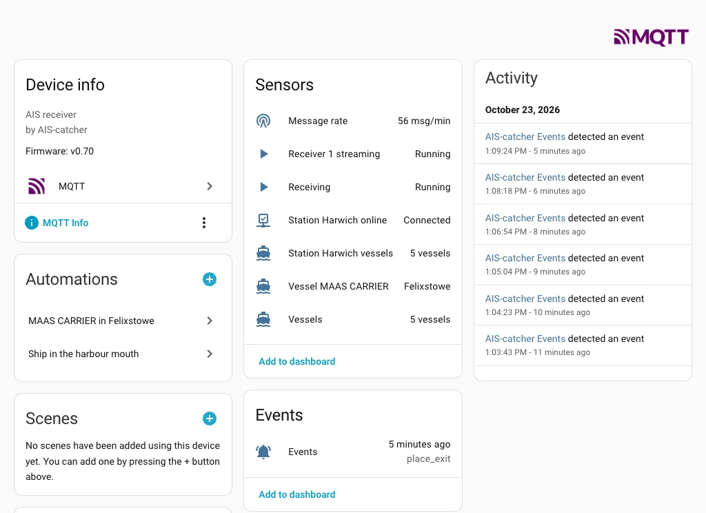
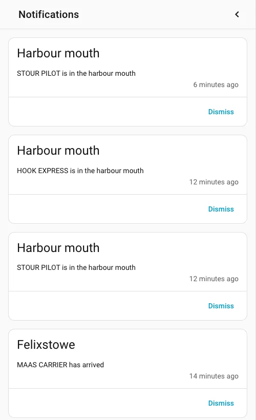

Home automation with Home Assistant and webhooks¶
Turn the events of your station into automations: a notification when a ship crosses the harbour mouth, a light when your ferry is in, the ships in port on a dashboard. With Home Assistant over MQTT, or anything that takes a webhook.

The station from the earlier parts knows when a ship enters the harbour mouth, calls at Felixstowe or sends a safety message. This part sends that news on: to Home Assistant, which turns it into notifications, lights and dashboards, and as webhooks to anything else that listens.
Two routes lead out of the station. MQTT carries its state and its events to Home Assistant, which finds everything by itself. Webhooks post each event to an address you choose, for Home Assistant or any other tool.
Home Assistant over MQTT¶
MQTT is the message broker most Home Assistant installations already run for their sensors. In the dashboard:
- Open Settings, then Services and Home Assistant.
- Enter the Broker, for instance
mqtt://homeassistant.local:1883, with the User and Password it asks for. - Leave Home Assistant discovery on. Under Watched vessels, put the MMSI of each ship you want to follow, one per line.
- Press Save changes.

config.json
"mqtt_state": {
"url": "mqtt://homeassistant.local:1883",
"username": "ais",
"password": "secret",
"watch": [244870001]
}
Command line
AIS-catcher -d 00000001 -W mqtt://homeassistant.local:1883 USERNAME ais PASSWORD secret WATCH 244870001
With discovery on there is nothing to set up in Home Assistant. Under Settings, Devices & services, MQTT a device called AIS-catcher appears, with:
- Vessels and Message rate: how busy the station is.
- Receiving, and for each receiver whether it is streaming: the station's health.
- For each station, whether it is online and how many vessels it heard in the last hour.
- Events: every arrival, departure, safety message and change of destination, as it happens.
- A device tracker for each watched vessel, with its position, speed and when it was last heard.

Note
The station's position is never published to the broker. A station that is private on the community map stays private here too.
A notification when a ship comes through the harbour mouth¶
The Events entity changes with every event. Its attributes say what happened: event_type is place_enter or place_exit for a place, text is the place's name, name and mmsi are the ship's.
automations.yaml
- alias: Ship in the harbour mouth
triggers:
- trigger: state
entity_id: event.ais_catcher_events
not_from: unavailable
conditions:
- condition: template
value_template: >
{{ trigger.to_state.attributes.event_type == 'place_enter'
and trigger.to_state.attributes.text == 'Harbour mouth' }}
actions:
- action: notify.mobile_app_your_phone
data:
title: Harbour mouth
message: "{{ trigger.to_state.attributes.name }} is in the harbour mouth"
Use your own notifier in place of notify.mobile_app_your_phone. not_from: unavailable keeps the automation quiet while Home Assistant starts. If you rename places now and then, compare trigger.to_state.attributes.place instead: the place's id, which never changes.

When your ferry is in¶
A watched vessel is a device tracker, so Home Assistant's own zones work on it. Draw a zone around the port in Settings, Areas, labels & zones and the tracker's state becomes the zone's name once the ship is inside:
automations.yaml
- alias: MAAS CARRIER in Felixstowe
triggers:
- trigger: zone
entity_id: device_tracker.ais_catcher_vessel_244870001
zone: zone.felixstowe
event: enter
actions:
- action: light.turn_on
target:
entity_id: light.hallway
Look up the tracker's entity id on the device page: it carries the ship's MMSI or its name, depending on what the station had heard when Home Assistant first saw it. A zone is a circle and works only for watched ships. A place has the port's real outline, knows whether the ship has stopped, and works for every ship.
The ships in port, on a dashboard¶
For counts, ask the station directly. With the API switched on, every place answers with the number of ships inside it:
configuration.yaml
rest:
- resource: http://raspberrypi.local:8119/api/v1/places/cfabeebc-3490-4863-aeea-f61984ed42a0
scan_interval: 60
sensor:
- name: Ships in Felixstowe
value_template: "{{ value_json.vessels_inside }}"
unit_of_measurement: ships
A ship counts as inside a port once it has stopped there, so ships steaming through do not push the number up. A server that uses keys needs one from every caller: add headers: {Authorization: "Bearer ..."}. An Open server needs none.
Webhooks, for everything else¶
A webhook posts each event to an address as it happens. Home Assistant takes them, and so do Node-RED, n8n and most automation tools. Add one under Services, Webhooks, or in the configuration:
config.json
"webhooks": [
{ "url": "http://homeassistant.local:8123/api/webhook/ais-events",
"events": ["place_enter", "place_exit"] },
{ "url": "https://example.org/hooks/ais", "events": ["safety", "system"], "secret": "whsec_..." }
]
The body is the event itself:
POST body
{ "id": "evt_1792744453_3", "time": "2026-10-23T11:54:13Z", "kind": "place_enter", "level": "notice",
"mmsi": 244870001, "name": "MAAS CARRIER", "place": "508906af-27ba-4219-9f92-6fee2b610516",
"text": "Harbour mouth", "lat": 51.935364, "lon": 1.315287 }
In Home Assistant a webhook trigger picks it up, no MQTT needed:
automations.yaml
- alias: Ship left the harbour mouth
triggers:
- trigger: webhook
webhook_id: ais-events
allowed_methods: [POST]
local_only: true
conditions:
- condition: template
value_template: "{{ trigger.json.kind == 'place_exit' and trigger.json.text == 'Harbour mouth' }}"
actions:
- action: notify.mobile_app_your_phone
data:
message: "{{ trigger.json.name }} left the harbour mouth"
- Signed. With a
secret, each request carries a signature as Standard Webhooks describes it, which their libraries check in one call. - Once per event. A beacon that repeats its safety text every minute is posted once, and again only after half an hour.
- Retried. An address that does not answer is tried again, from five seconds up to an hour apart, while the other webhooks carry on.
- At once. A saved webhook starts posting without restarting AIS-catcher.
From antenna to automation: stations for every antenna, geofences for the water, the API and MCP to ask about it, and automations to act on it. If you build something with your station, tell us in the forum.
Where to go next¶
New to AIS-catcher, or setting it up step by step? Start with the Quick Start. Every option of this tutorial is in the documentation.
- Quick Start: install AIS-catcher and see your first ships, in a few steps.
- Vessels in Home Assistant: the set-up guide for Home Assistant.
- Home Assistant and MQTT state: every key and every topic.
- Webhooks: every key, the request headers and the signature.